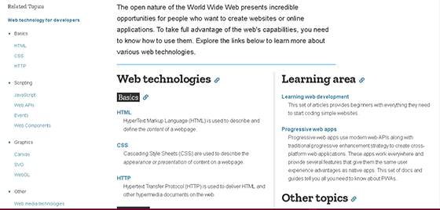
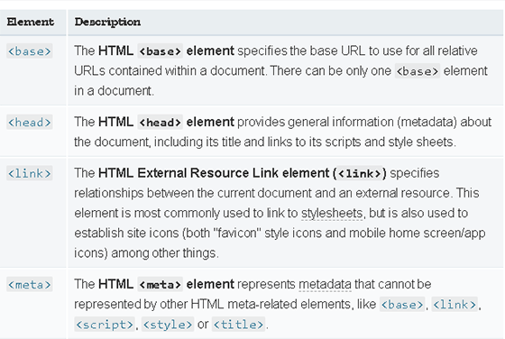
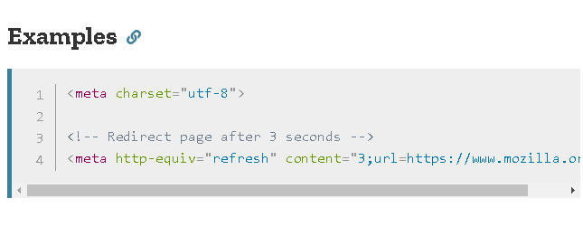
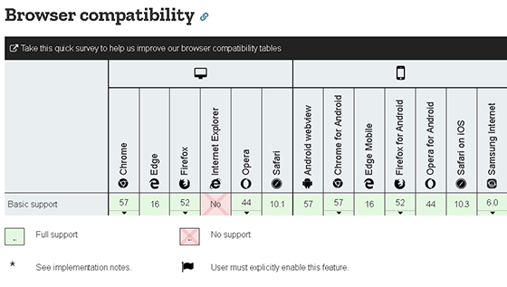

Lynda.com
The following are a selection of tutorials from Lynda.com, from HTML basics to the more advanced CSS grids and HTML canvas.
Lynda.com is an extended collection on videos covering an extraordianary variety of topics and tutorials.
Mozilla Developer Network is aimed more specifically at web developers and offers a variety of wasy to improve their skills.
Both have practical implementations. On Lynda, most videos have an assessment at the end of every chapter, while MDN offers practical examples to be tried out alongside the theoretical part of a tutorial.
The following are a selection of tutorials from Lynda.com, from HTML basics to the more advanced CSS grids and HTML canvas.
In a manner similar to Lynda's, Mozilla has tutorials for any topic. They are structured thematically and can be undertaken as a training, or just as a quick reference guide.  © 2005-2019 Mozilla and individual contributors
It inclues a complete reference to all HTML tags, CSS attributes in the form of tables. Additionally, one can find extensive material on HTTP, JavaScript, Web APIs and Graphics.
 © 2005-2019 Mozilla and individual contributorsAll entries are accompanied by multiple examples, notes, and specifications.  © 2005-2019 Mozilla and individual contributors
A comprehensive table for browser support is provided for each item.
 © 2005-2019 Mozilla and individual contributors